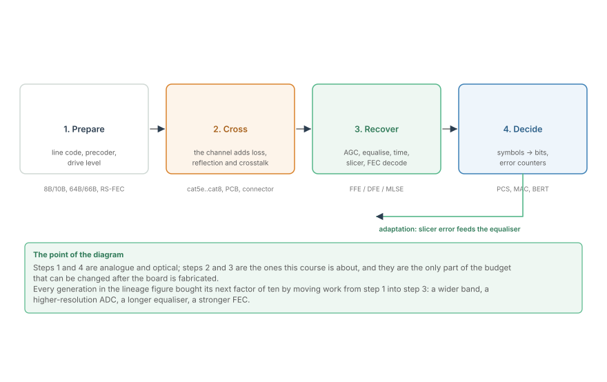
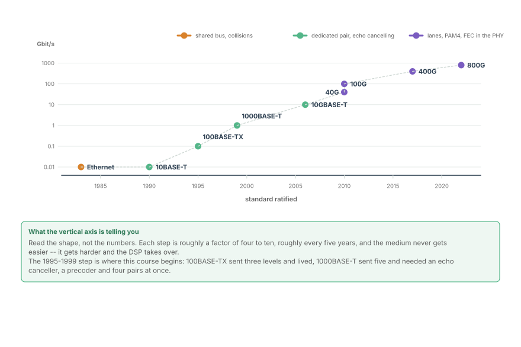
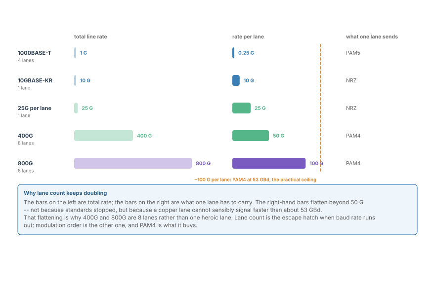
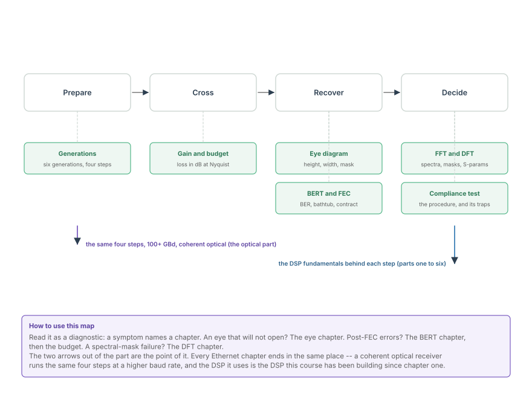

Six Generations of Ethernet, and the Data-Processing View
From a shared coax bus with collision detection to 800G over eight lanes: what the physical layer added each time the channel ran out of margin, and the four steps every Ethernet generation actually performs.
Ethernet is the largest deployed population of the problem this course has been circling. Every idea in the six parts before this one -- sampling, quantisation, decibels, the Fourier transform, filters, multirate, estimation, equalisation -- ends up inside a port on the back of a switch, doing its job at 25 or 53 gigabaud, on a channel nobody chose and nobody can change. This part is the bridge from the theory to the equipment.
It is also the part where the history matters, because Ethernet's physical layer is a record of fixes. Each generation ran out of a different kind of margin, and each time the industry bought the next factor of ten by moving work out of the analogue front end and into digital signal processing. The DSP in this course is not decoration on top of Ethernet; it is the reason Ethernet kept scaling.
Four steps, every generation
Before the timeline, the shape. Any Ethernet physical layer, from 10BASE5 to 800G, does the same four things, and naming them is what makes the rest of this part navigable.

The first and fourth are analogue and protocol; the second and third are the ones this course is about.
- Prepare. Take bits, and turn them into something a line can carry. That means a line code (8B/10B in 1000BASE-X, 64B/66B above 10G), scrambling to keep the spectrum busy, a precoder where the channel has memory, and enough drive amplitude to arrive.
- Cross. The channel. A cable or a backplane, tens of decibels of frequency-dependent loss, reflections at every connector, and crosstalk from the pairs beside it.
- Recover. Automatic gain control, equalisation, timing recovery, slicing, and forward error correction. This is where the arithmetic lives.
- Decide. Turn symbols back into bits and count what went wrong.
The point of drawing it this way is that a symptom names a step. An eye that will not open is step 2 or 3. A spectral-mask failure is step 1. A post-FEC error floor with a healthy eye is step 4, or an FEC that is not being driven hard enough. The rest of this part walks the steps in the order an engineer meets them.
The generational timeline
Ethernet's rates have grown by roughly a factor of four to ten every five years for four decades, and the medium has become harder rather than easier at every step.

Read the shape rather than the numbers. The first decade is a shared coaxial bus at 10 Mbit/s with collision detection: one electrical segment, everyone hearing everyone, and the only signal processing a threshold detector. The second is the move to dedicated twisted pairs, which is where echo cancellation and adaptive equalisation enter the story, because a pair that transmits and receives at the same time hears its own transmission.
The third is where the curve leaves the page. 10GBASE-T asks a category-6a cable -- a cable designed for 100 MHz of useful bandwidth -- to carry 400 MHz of Nyquist bandwidth. It only works because the receiver contains a digital signal processor that undoes what the cable did, and because the line code was chosen knowing that the equaliser would be there.
Where the rate came from
Total rate is a marketing number. What the physical layer actually has to produce is the rate on one lane, and the lane is where the difficulty lives.

Two escape hatches appear when per-lane rate runs out:
- More lanes. 100G is four lanes at 25 GBd; 400G is eight at 50; 800G is eight at 100. Lanes are an architectural answer, and they work until the package, the connector and the power budget object.
- More levels per symbol. PAM4 puts two bits in every symbol, so the same 53 GBd carries 106 Gbit/s per lane instead of 53. It costs 9.5 dB of amplitude margin against NRZ at equal peak-to-peak swing, which is why PAM4 arrived with FEC rather than instead of it.
The right-hand bars flatten beyond 50 G per lane for a reason that is not going away: signalling a copper lane much faster than about 53 GBd gives the channel more bandwidth than the channel physically has. That is the wall that pushed the industry into more lanes and more levels at the same time.
The same channel, addressed four different ways
Each generation bought its factor of ten with a specific technique. The technique is what the chapter names, and it is worth knowing which one your link relies on.
| Generation | New problem | What the PHY added |
|---|---|---|
| 10BASE-T | a shared bus is not a network | dedicated pairs, link pulses |
| 100BASE-TX | 100 m needs more than baseband NRZ | MLT-3, 3 levels, scrambler |
| 1000BASE-T | 4 pairs, simultaneous bidirectional | echo canceller, precoder, PAM5 |
| 10GBASE-T | 400 MHz of Nyquist on a 500 MHz cable | a full digital receiver, LDPC-class FEC |
| 25G / 100G lanes | per-lane baud ceiling, backplane loss | PAM4, FFE/DFE, RS-FEC |
| 400G / 800G | bandwidth per lane is exhausted | more lanes, stronger FEC, co-packaging |
The row that matters most for this course is 10GBASE-T, because it is the first Ethernet standard that could not be built without a DSP. Everything after it assumed one.
What the standards bodies actually fix
A standard is not a suggestion about implementation. It fixes a small number of things, and the small number is what makes interoperability possible:
- The channel. A mask for insertion loss, return loss and crosstalk, as a function of frequency. This is the problem statement.
- The signal. Levels, rise time, spectral mask, and the test patterns. This is the transmit contract.
- The receiver's performance. A maximum error ratio, usually with an assumed equaliser and a specified test channel.
- The mechanism. Training sequences, auto-negotiation, and what happens when the two ends disagree.
Everything between the transmit contract and the receiver's performance is the implementer's freedom, and that freedom is where the DSP lives. Two vendors' 10GBASE-T PHYs can differ in every block and still interoperate, because the standard constrains behaviour at the pins, not arithmetic inside the chip.
Where this part goes

The order is the order of the questions an engineer actually asks:
- The link budget asks how much signal arrives and how much the equaliser must restore. That is gain and loss, in decibels.
- The eye diagram asks what the recovered signal looks like, and whether it clears the mask.
- BERT and FEC ask how often it is wrong, and what the code is contracted to repair.
- The DFT asks whether the transmitter's spectrum and the channel's response meet their limits -- which is a frequency-domain measurement, made with the transform from part two of this course.
- The compliance procedure puts all of it on a bench and turns it into a number that can be signed.
Each chapter ends where it is used, and each one names the chapter that diagnoses its failures. That is deliberate: a compliance report is not a list of measurements, it is a chain of reasoning, and this part is that chain.
In the optical link
The optical part of this course runs the same four steps at a higher baud rate. A coherent receiver's 90-degree hybrid and balanced photodiodes are step 1 and step 2 -- the channel is a fibre, and its impairments have different names: chromatic dispersion instead of skin-effect loss, polarisation rotation instead of pair crosstalk, the Kerr effect instead of connector reflections. Steps 3 and 4 are recognisably the same blocks: AGC, adaptive equalisation, timing and carrier recovery, slicing, and hard-decision FEC.
The scale is the difference. A copper lane tops out near 53 GBd because the channel's loss rises with frequency and the equaliser has to invert it. An optical span carries 100+ GBd per wavelength with dispersion that the frequency-domain equaliser undoes as a near-all-pass phase correction -- cheaper per decibel, and the reason coherent optics scales where copper does not.
And the vocabulary transfers. Every term this part introduces -- insertion loss at Nyquist, eye height, bathtub curve, pre-FEC error ratio, spectral mask -- is a term the optical team uses daily. A 400ZR link is commissioned with the same arithmetic, and the number on the compliance report is quoted in the same decibels. Learning it on Ethernet is learning it once.
That is why this part sits where it does: after the DSP theory, before the optical application, and using the vocabulary of both.